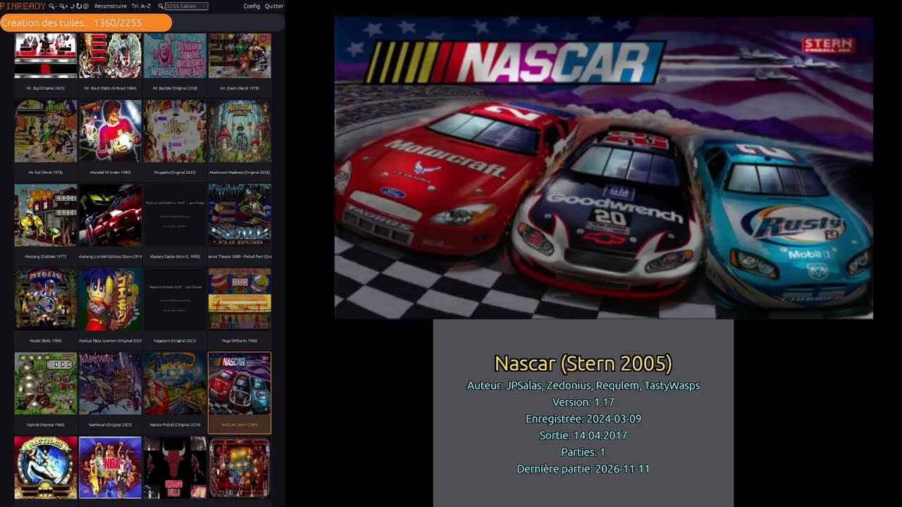

Visual Pinball X 10.8.1 standalone
Configura il tuo flipper virtuale, poi gioca
PinReady è una procedura guidata e un launcher di tavoli, gratuiti e open source, per Visual Pinball X (VPX) 10.8.1 standalone. Configura schermi, comandi, tilt e nudge e audio con parole semplici, poi ti permette di sfogliare e avviare i tuoi tavoli da un unico menu. Da un computer con un solo schermo fino a un pincab completo (un cabinet da flipper con più schermi), su Linux, macOS e Windows.
Guardalo in azione

PinReady Découverte – una prima visita di PinReady per principianti (video su YouTube, in francese). Altre dimostrazioni nella playlist.Perché PinReady
Le versioni standalone di Visual Pinball X non hanno uno strumento di configurazione proprio: schermi, pulsanti e altoparlanti sono righe in un file di testo, VPinballX.ini. PinReady invece ti fa le domande, rileva il tuo hardware e scrive quel file per te, conservando i commenti che contiene. Terminata la procedura guidata, PinReady si apre direttamente sulla tua collezione di tavoli.
Procedura guidata
Otto pagine: schermi, grafica, comandi, accessori, tilt e nudge, audio, tavoli, sistema. Ogni opzione ha una breve spiegazione.
La procedura guidata →Launcher di tavoli
Una griglia dei tuoi tavoli con il loro backglass, ricerca, navigazione con il joystick e avvio con un clic, con barra di avanzamento del caricamento.
Il launcher →Download
Un solo file del programma per Linux, macOS o Windows. Niente da installare, nessuna dipendenza.
Scarica e avvia →Di cosa si occupa PinReady
- Visual Pinball stesso: scarica e installa una versione di VPX per il tuo sistema, oppure usa quella che hai già, e propone gli aggiornamenti quando ne esce una nuova.
- Schermi: rileva ogni monitor, suggerisce quale usare come playfield, backglass (lo schermo verticale sul retro), DMD (il display del punteggio) e topper, e posiziona le finestre di gioco.
- Comandi: tastiera e joystick per ogni azione di VPX, con configurazioni pronte per le schede Pinscape KL25Z, Pinscape Pico, DudesCab e PinOne, e un avviso quando due azioni condividono lo stesso tasto.
- Tilt e nudge: sensibilità dell'accelerometro, con una vista in tempo reale mentre scuoti il cabinet.
- Audio: una scheda audio per musica e voci, una per i suoni meccanici del playfield, sei disposizioni degli altoparlanti tra cui SSF (surround sound feedback), e suoni di prova per verificare i collegamenti.
- Tavoli: la tua cartella dei tavoli, un'importazione facoltativa che dà a ogni tavolo la sua cartella, patch di script facoltative per i tavoli più vecchi, e immagini del backglass scaricate per il launcher.
- Accessori: una guida passo passo al DOF (Direct Output Framework: giocattoli, luci, solenoidi) e l'installazione con un clic dell'head tracking.
- Sistema: avvio all'accensione, scorciatoie nei menu e file
.vpxche si aprono con Visual Pinball.
Funziona su
- Linux (x86_64 e ARM 64 bit), macOS (Apple silicon e Intel, macOS 11 o successivo) e Windows (64 bit).
- Nessuna dipendenza di sistema: SDL3 e SQLite sono incorporati nel programma.
- Interfaccia disponibile in 26 lingue, tra cui inglese e francese.
Software libero, sviluppato in pubblico
PinReady è scritto in Rust con egui e SDL3 e rilasciato con licenza GNU GPL v3 o successiva. Il codice sorgente, le release e il tracker delle segnalazioni sono su GitHub. Domande, segnalazioni di bug, beta test o anche solo due chiacchiere: entra su Discord.